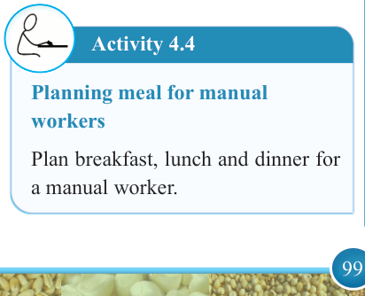

99


Food and Human Nutrition

Form Two
The following points should be taken into consideration when planning meals for manual workers.
(i) The meals should be balanced; however,
they
should
also
contain an increased amount of energy-giving foods such as carbohydrate and fats.
(ii) Provide foods with B vitamins to facilitate the release of energy in the body.
(iii) The food should be served in
adequate amounts.
(iv) The foods should be well flavoured.
(v) Give lots of fluids for body’s hydration to replace water lost through sweating.
Suggested suitable dishes for manual
workers
Stewed meat, maize stiff porridge, chapatis, coconut rice, fruit salads,
vegetable salads, roasted chicken, fried fish, tea with milk, fried eggs, meat pilau, maize and kidney beans, fruit salad, mixed fruit juice, vegetable salad, cowpeas leaves with groundnut sauce,
whole grain bread with butter.
Activity 4.4
Planning meal for manual workers
Plan breakfast, lunch and dinner for a manual worker.
Meals for sedentary workers
Sedentary life is a lifestyle that involves a lot of sitting and lying down with very minimal or no physical activity.
People with a sedentary lifestyle need to be careful with their energy intake as it can easily exceed their energy output leading to weight gain.
The following are points to consider when planning meals for a sedentary worker.
(i) The meal should be balanced; however, there should be high intake of foods such as salads, fruits and vegetables rather than higher amount of carbohydrate rich foods.
(ii) Fried foods and snacks such as
pastries, cakes and biscuits should
be avoided as they contain high amount of fat that can increase energy intake.
(iii) Choose to use whole grains and
wholemeal flour instead of refined
flour because the fibre present in wholegrains slows down glucose
absorption thus regulating energy
intake.
Suggested suitable dishes for sedentary workers
Fruit salad, brown bread sandwiches with
vegetables, grilled fish, curried lentils, stewed beans, curried peas, spiced tea, boiled egg, spaghetti with vegetables,
vegetable salad, vegetable juice and mashed potatoes.

17/09/2025 16:30